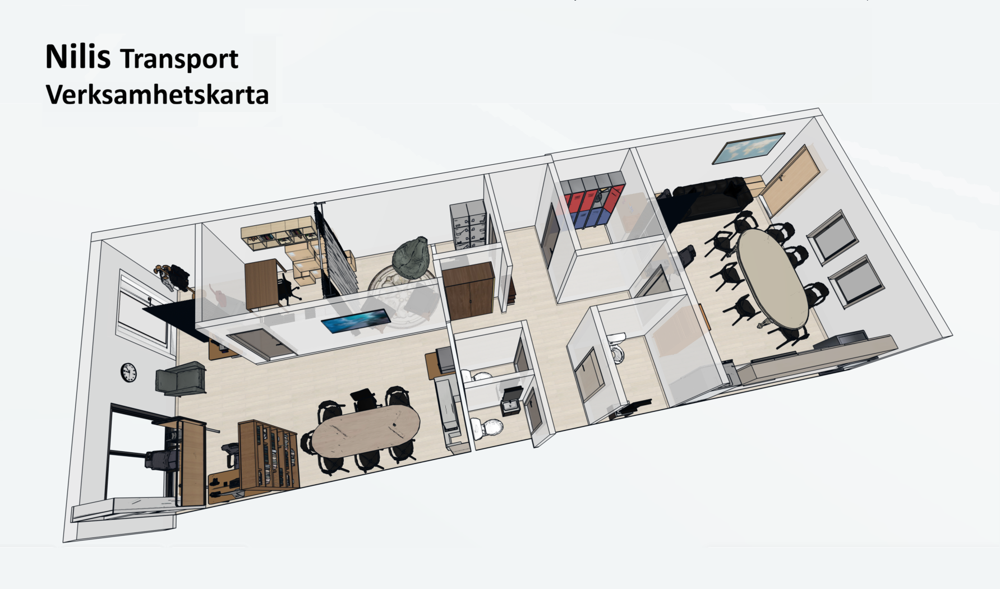

Praktisk service, transportuppdrag och strukturerat arbetsstöd med fokus på självständighet och konkreta lösningar.

Transportgruppen arbetar med uppdrag inom leverans, service och praktiska arbetsmoment i kommunen. Gruppen präglas av lugn, trygghet och en stark gemenskap där deltagare och personal arbetar tillsammans för att lösa konkreta uppgifter.
Arbetet består bland annat av bokleveranser till bibliotekets tjänst "Boken kommer", transport av datorer till olika verksamheter, transporter till Skryllegården samt underhåll av utemiljöer som Hasslemölla.
Många uppgifter är återkommande och skapar tydlig struktur i vardagen. Samtidigt uppstår nya praktiska situationer som kräver samarbete, problemlösning och flexibilitet.
Gruppen fungerar bäst när arbetsuppgifterna är konkreta, tydliga och meningsfulla. Den starka gemenskapen och igenkänningen i arbetet skapar trygghet och gör att många deltagare kan arbeta självständigt i sina uppgifter.